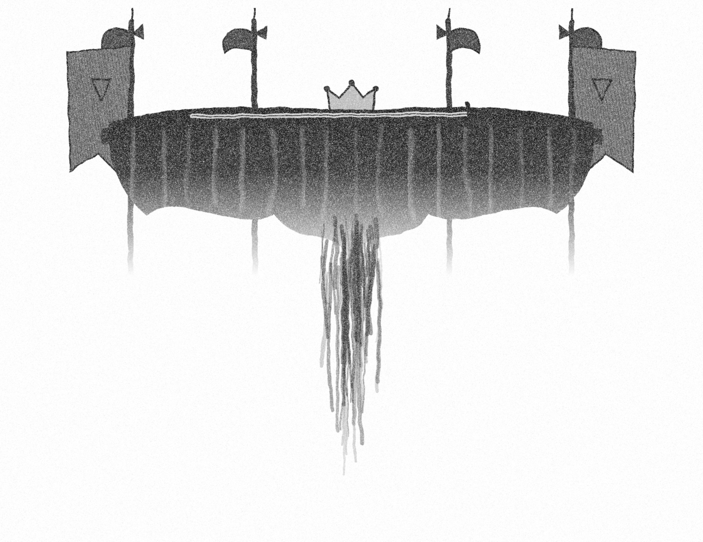

Of carnal, bloody, and unnatural acts, Of accidental judgments, casual slaughters, Of deaths put on by cunning and forced cause, And, in this upshot, purposes mistook Fall'n on the inventors' heads: all this can I Truly deliver.
Let us haste to hear it, And call the noblest to the audience. For me, with sorrow I embrace my fortune: I have some rights of memory in this kingdom, Which now to claim my vantage doth invite me.
Of that I shall have also cause to speak, And from his mouth whose voice will draw on more; But let this same be presently perform'd, Even while men's minds are wild; lest more mischance, On plots and errors, happen.
Let four captains Bear Hamlet, like a soldier, to the stage; For he was likely, had he been put on, To have proved most royally.